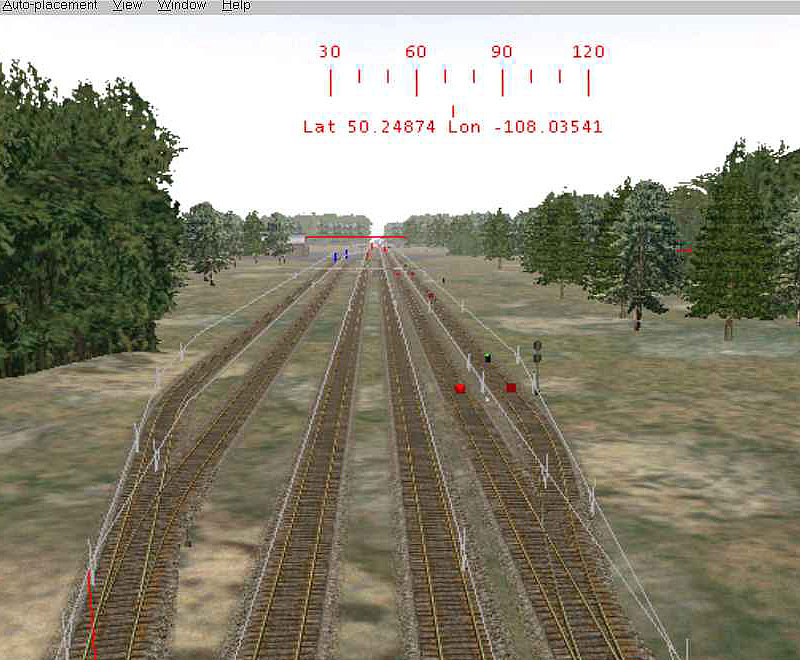

Filling Up Your Yards With Static Trains
by Jim "sniper297" Ward
Overview
First, why static trains?
Well, we all love really big freight yards - problem is they look really lame unless they're filled with cars, and filling them with cars in an activity drops the frametrates to 3FPS. The reason for that is for each and every loose consist car in an activity, the game loads the wag files, shape files and textures, sound files, and location on the track database, with a unique UID number for each car since it has to keep track of it as a potential movable object.
Static trains are purely scenery objects, nothing but the shape and texture is loaded, and they're much easier on framerates.

This is not a very big yard, there are only three yard tracks on the left, and a player track with two AI traffic tracks on the right. Adding fake tracks and static trains on the outside will create the illusion of a much bigger yard.
Two ways to do this, use real track sections that are not connected to the tracks you drive on, or use fake tracks. Fake tracks are better because they don't show up in the activity editor, so an activity designer can't accidently create a path that runs thru static trains. John Milligan's dumbtrak.zip from the file library is a good source, or you could steal the shapes and ref datablocks for "maintracks" and "dirtytracks" from the Port Ogden & Northern (current PONver9.zip).